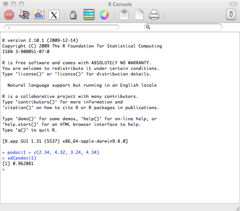
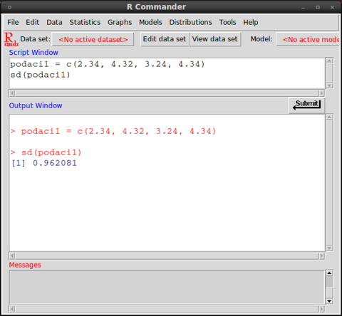
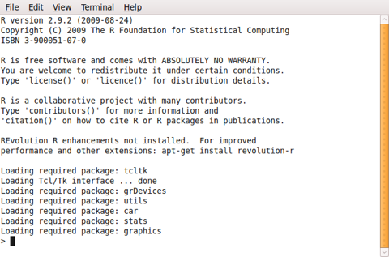
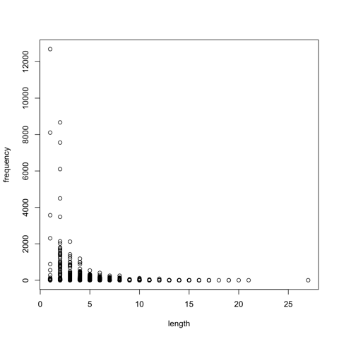

Upute za rad s R-om
Damir Ćavar, veljača 2010.
Instalacija
R možete naći na mrežmim stranicama:
Ako niste korisnik neke tipične verzije Linuxa (Ubuntu, Debian, Suse, Fedora itd.), skinite verziju za vaš operativni sustav. Ako koristite Linux, obično vam alati za instalaciju i dodavanje softvera nude mogućnost dodati R sustav i grafičko sučelje (npr. R-Commander).
Za primjere u sljedećem tekstu modul stats u R-u mora biti aktivan (tj. učitan). Za sve primjere koristimo program R, i to konkretno R Console, koji izgleda drugčije na različitim operativnim sustavima:
Mac OS X:

Ubuntu Linux 10.04 - Terminal i R-Commander:


Microsoft Windows:
Osnovne funkcije
Podaci za analizu mogu se dodavati ručno u R-u na način:
podaci1 = c(2.34, 4.32, 3.24, 4.34)
To eksplicitno znači da niz rezultata unutar okruglih zagrada sačuvamo u memoriji pod imenom podaci1. Ime podaci1 nam služi kao varijabla u pozivanju različitih funkcija za analizu tih podataka ili rezultata, tako da ih ne moramo ubacivati u sustav svaki put iznova. Promjene rezultata i podataka mogu se isto tako sačuvati pod tim imenom.
Ako pogledate slajdove 1, možete sve analize izvoditi jednostavno u R-u. Tako se može aritmetička sredina dobiti komandom:
mean(podaci1)
Ta komanda je ista kao i:
mean(c(2.34, 4.32, 3.24, 4.34))
Srednja vrijednost dobije se komandom:
median(podaci1)
Najmanji i najveći rezultat možete dobiti komandama:
min(podaci1)
max(podaci1)
A raspon varijacije (znači najmanja i najveća vrijednost, i oduzimanje manje vrijednosti od veće) dobijete s komandom:
range(podaci1)
Zbrajanje svih rezultata u strukturi podataka podaci1 može se postići komandom:
sum(podaci1)
Varijancu možete izračunati komandom:
var(podaci1)
Standardnu devijaciju za podatke dobijete s komandom:
sd(podaci1)
Ako podatke imate složene u nekoj datoteci, možete ih učitati iz datoteke. Podatci mogu biti složeni u obliku “tabele”, kao npr.:
token frequency length
meštrom 1 7
pićan 1 5
znamenite 2 9
manzonijeve 3 11
snime 1 5
iis 1 3
daržavom 1 8
zasladi 1 7
profiliranu 1 11
osmjehnu 2 8
braku 10 5
orane 1 5
...
Ovi podaci su generirani iz nekoliko knjiga iz Hrvatskog jezičnog korpusa. Cijela datoteka nalazi se u pretincu Datoteke. Skinite datoteku sample.dat na svoje računalo i u R-u izvedite komandu:
words=read.table(file=file.choose(),header=TRUE)
Ako koristite Microsoft Windows i R ne učitava datoteku, pokušajte specificirati kodiranje podataka. Podaci u sample.dat su kodirani u UTF-8 formatu. Windows korisnici mogu pokušati učitati sample-ANSI.dat datoteku (u pretincu Datoteke), u kojoj su podaci kodirani u ANSI kodu. Ako koristite ANSI kodirane podatke, ne morate specificirati kod podataka, tj. koristite komandu bez encoding parametra.
words=read.table(file=file.choose(),header=TRUE,encoding="UTF-8")
Neke verzije R-Commander sučelja pod Linuxima ne otvaraju prozor za selekciju datoteke s komandom file=file.choose(). Jedino brzo i jednostavno riješenje je da specificirate ime datoteke bez prozora za selekciju datoteke, ako se datoteka sample.dat nalazi u folderu /tmp:
words=read.table(file="/tmp/sample.dat",header=TRUE,encoding="UTF-8")
Ta komanda bi otvorila datoteku bez mogućnosti izabira u prozoru za selekciju datoteke.
Komanda s file.choose() dijelom, otvoriti će prozor za izbor datoteke za učitavanje. Za to otvaranje izbornog prozora odgovorna je potkomanda: file.choose(). Dodatak “header=TRUE” označava da su podaci u datoteci složeni kako opisano u prvom redu koji se smatra naslovom za razrede podataka. Ako izaberete datoteku sample.dat, R će učitati podatke i sačuvati ih u varijabli words.
Sadržaj te varijable, znači sve podatke o frekvencijama i dužini riječi, dodajemo radnome sučelju ili aktiviramo u istome s komandom:
attach(words)
Možemo npr. prikazati relaciju između frekvencije riječi i njihove dužine sa sljedećom komandom:
plot(length,frequency)
Ako je sve do sada bilo u redu, rezultat te komande za generiranje grafike trebao bi izgledati kao sljedeći graf:

Isti graf nalazi se u pretincu Datoteke u PDF formatu za otvaranje u Acrobat Readeru. Ime te datoteke je Word-Freq-Length.pdf.